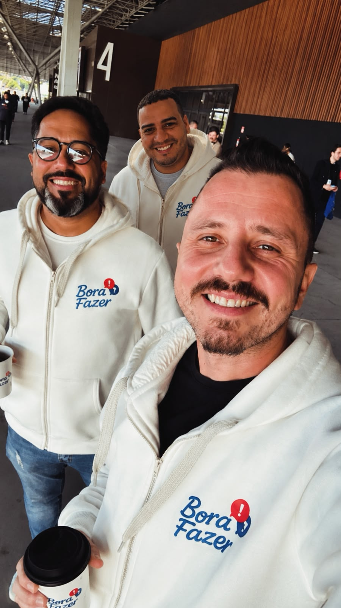

Clareza gera melhores decisões
Antes de propor qualquer solução, buscamos compreender profundamente a operação.
Quem somos
Mais do que executar projetos, acreditamos que toda empresa cresce melhor quando possui processos claros, indicadores confiáveis e uma operação preparada para acompanhar esse crescimento.

Nossa história
Ao longo dos anos participamos de operações envolvendo ecommerce, marketplace, logística, projetos especiais e experiências de marca.
Em cada projeto percebíamos um padrão: boas empresas tinham excelentes produtos, boas ideias e equipes comprometidas, mas muitas enfrentavam os mesmos desafios — processos descentralizados, informações espalhadas, retrabalho e dificuldade para acompanhar a operação.
Foi dessa experiência que nasceu a Bora Fazer. Não para vender serviços isolados, mas para ajudar empresas a construir operações mais organizadas, claras e preparadas para crescer.
Hoje unimos experiência prática, tecnologia e organização para transformar desafios operacionais em processos mais eficientes e decisões mais seguras.

O que aprendemos na prática
A marca vê o projeto. O cliente vê a experiência. Mas antes disso existe uma sequência de decisões, materiais, prazos, conferências, fornecedores, sistemas e pessoas fazendo a operação acontecer.
Nosso lugar é nesse bastidor: entre a estratégia e a entrega, entre vender mais e conseguir sustentar o que foi vendido.
O que acreditamos
Antes de propor qualquer solução, buscamos compreender profundamente a operação.
Ferramentas só fazem sentido quando reduzem complexidade e aproximam empresas dos seus objetivos.
Nosso objetivo não é criar processos burocráticos, mas tornar a operação mais previsível e eficiente.
Empresas crescem com mais segurança quando possuem indicadores, processos e responsabilidades bem definidos.
Como trabalhamos


Somos uma operação aprendendo todos os dias a organizar melhor o que precisa acontecer: físico, digital, logístico e comercial.
Ver o que fazemos ↗Vamos conhecer sua operação?
O primeiro passo é entender como sua operação funciona para identificar oportunidades reais de melhoria.